1
Noise Library Characterization
- Overview
- Performing Noise Characterization
- User-Defined Noise Model - An Overview
- Additional Information
Overview
This chapter describes how to use the make_cdB noise characterizer utility to generate a cdB noise library from transistor-level netlists and SPICE models. In addition, it discusses memory characterization.
Before the signal integrity analyzer performs a comprehensive crosstalk analysis of a cell-based digital circuit, each cell in a cell library can be characterized by the make_cdB utility. Alternatively, cells can be modeled using black-boxes, which include user-defined noise (UDN) models or timing libraries (.lib). However, in this case, crosstalk analysis is not as accurate as compared to using data characterized by make_cdB.
The make_cdb utility analyzes the transistor-level netlist of a cell for noise effects as seen from its input and output ports. It computes the essential information needed for noise analysis and encapsulates it in a cell-level model. The cell-level model contains the subcircuit (subckt) related information for the cell along with the noise and delay characteristics of the ports of the cell.
The characterized noise library typically has a .cdB extension. This resultant cell library (.cdB file) contains a cell-level view and a transistor-level view. The cell-level view contains data, such as pin capacitance, calibrated input noise threshold, and nonlinear output drive strength. The transistor-level view contains the transistor cell subcircuit. However, if the cell is large, the transistor-level view contains only the peripheral transistors connected to ports of the cell. For more information on characterizing large cells, see RAM Cells.
make_cdB Tcl Scripts
The make_cdB utility supports a Tcl interface. Most make_cdB scripts contain commands in the following sequence:
set_supply
set_net
read_dotlib
generate_cell_lib
The following example illustrates the contents of a sample Tcl script, which shows the use of the set_supply and generate_cell_lib commands.
set_parm port_vdd_r 1
set_parm port_gnd_r 1
#Set the global supply. VDD is set to 1.5V and GND is set to 0.0V.
set_supply -vdd 1.5 -gnd 0
#Set non-global supplies.
set_net -vdd 3 vdd3
# Pick up the pin directions from the wc.lib file.
read_dotlib wc.lib
# Generate the CDB for the cell, XOR.
# Define the transistor level netlist and models for XOR in the SPICE main.spi file.
# Output the CDB in the cells.cdB file.
generate_cell_lib \
-vdd { vdd VDD vdd3 VDD3 } \
-gnd { gnd GND 0 } \ -cell_list { XOR } \ -file_list { main.spi } \ -file cells.cdB
cdB Contents
This section describes the cdB contents, which include propagated slew and arc current models.
Propagated Slew
A cdB contains propagated slew. Slew propagation calculations are used in situations where multistage cells drive the nets. These calculations enable you to propagate the slews available at the inputs of the cell down to the driving channel-connected component (CCC) inputs. For more information about slew propagation, see Slew Propagation.
Arc Current Models
Arc current models, which are used for low effort crosstalk delay modeling during signal integrity analysis, represent the current drawn by the driver as a function of input and output voltage. There are unique tables for each transition and from each last logic stage input (input pin or internal node) to the output. At the input pin, arc current models are used for path based alignment during signal integrity analysis. At the output pin, arc current models are used for low-effort modeling of aggressor and victim drivers. For more information about arc current models, see Constructs in Arc Current Models.
cdB Noise Library Format
To perform noise-on-delay and glitch analysis, the signal integrity analyzer requires a noise view for each cell in the circuit. The creation of these noise views is done using the make_cdB utility. This utility automatically characterizes a group of cells or macro blocks to create a binary cdB noise library. The ASCII equivalent format for these noise views is described in this section.
 To create a cdB noise library in ASCII format, use the
To create a cdB noise library in ASCII format, use the -text option of the generate_cell_lib command.
cdB Noise Library Structure
The cdB noise library structure includes:
- SPICE models used for characterizing the cdB noise library in BSIM3, BSIM4 or MOS9 formats.
- Characterized noise data for each cell.
-
Transistor-level (
.subckt) description of each cell in SPICE format.
The figure below shows the cdB noise library structure.
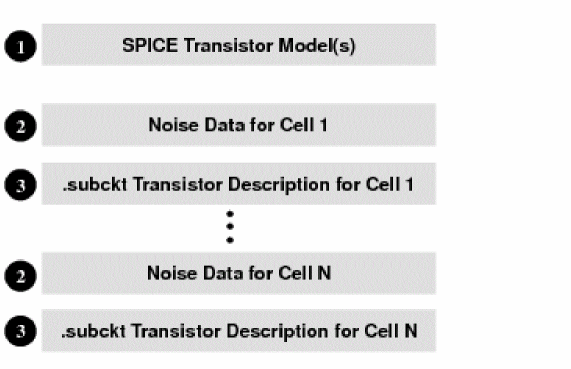
The data in sections 1 and 3 are copies of the input data provided to the make_cdB utility. The signal integrity analyzer uses this data to perform a complete transistor-level simulation for certain noise calculations. The characterized noise data for a single cell (section 2) is described in the following sections.
Characterized Noise Data
The characterized noise data includes information about the cell, input pins, output pins, and bidirectional pins.
This section discusses the following topics:
Cell Information
bb_is_cell Flag to indicate that this is a cell with a transistor-level view.
Cell Input Data
bb_set_input [-vhtolerance float] [-vltolerance float] [-cap float] {ports}Marks the specified ports as UDN inputs.
For more details, see bb_set_input.
Cell Output Data
bb_set_output [-vddres float] [-gndres float] [-canfloat] [-cap float] [-vhnoise {time_value_pairs}] [-vlnoise {time_value_pairs}] {ports} Marks the specified ports as a UDN output.
For more details, see bb_set_output.
Cell Bi-Directional Data
bb_set_bidi [-vhtolerance float] [-vltolerance float] [-cap float]
[-cannotfloat] [-vddres float] [-gndres float]
[-vhnoise {time_value_pairs}] [-vlnoise {time_value_pairs}] {ports}
Marks the specified ports as a bidirectional input/output port. This command has most of the features of the set_input and set_output commands. The defaults for inputs and outputs are used for bidirectionals.
For more details, see bb_set_bidi
Performing Noise Characterization
This section describes the tasks you perform to generate the cdB noise library.
The figure below shows the make_cdB flow. The resultant .cdB file is required as input for performing signal integrity analysis.
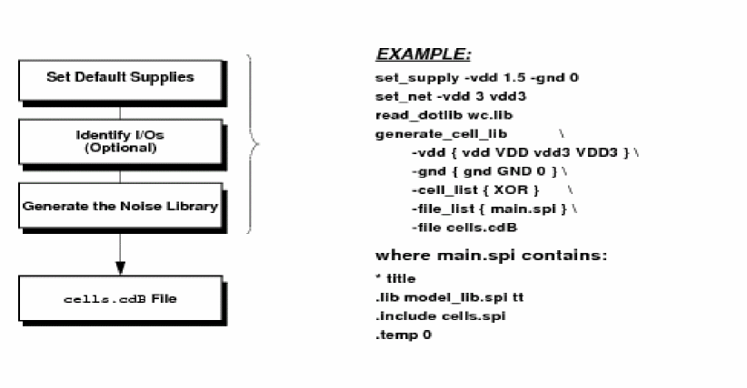
Running make_cdb
You can run the make_cdB utility in interactive or batch mode from the UNIX prompt.
To run the make_cdB utility in interactive mode, use the following command:
% make_cdb
To run the make_cdB utility in batch mode, use the following command:
% make_cdb cmdfile.tcl |& tee logfile.log
where, the cmdfile.tcl contains valid make_cdB or Tcl commands and the output of the make_cdb command is replicated to the logfile.log file using the tee command.
The complete syntax of the make_cdb command is as follows:
make_cdb
[-v]
[-c]
[-check]
[cmdfile] Parameters
Specifying Power Supply Names
The power supply names must be specified using the -vdd and -gnd options. There are no default power supply names, so the default supply voltage is applied as specified in the set_supply command. Additional voltages can be specified on a local basis using the set_net command.
Setting the Default Power Supplies
There are two types of default power supplies: global and local. Use the set_supply command to set the global power supply and the set_net command to set the local power supply.
Setting Global and Local Power Supplies
Global power supplies are used during simulation to set circuit voltages.
Power supply nodes must be identified for the generate_cell_lib command to work properly. These nodes help to identify capacitors connected to supply nets.
 To set the global power supplies, use the
To set the global power supplies, use the set_supply command.
Local power supplies are used when multiple voltages are desired.
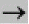
To set the local power supplies, use theset_net command.
The following example illustrates how the set_supply and set_net commands are used to set the global and local power supplies, respectively:
set_parm port_vdd_r 1
set_parm port_gnd_r 1
set_supply -vdd 1.5 -gnd 0
set_net -vdd 3 vdd3
read_dotlib wc.lib
generate_cell_lib \
-vdd { vdd VDD vdd3 VDD3 } \
-gnd { gnd GND 0 } \
-cell_list { XOR } \
-file_list { main.spi } \
-file cells.cdB
The set_supply command specifies the global power supply. The -vdd option specifies the nominal supply voltage as 1.5V and the -gnd option specifies the value of nominal ground voltage as 0.0V.
The set_net command specifies the local power supply. The -vdd option specifies the value, 3.0V, for the net, vdd3.
Setting Multiple Power Supplies
You set multiple power supplies if a cell can have multiple operating voltages, such as the one used in multiple supply multiple voltage (MSMV) designs. This is not required for proper IR-drop analysis. To set multiple power supplies in make_cdB, use multiple set_supply commands.
Identifying the I/Os
During noise characterization, the make_cdB utility automatically extracts I/O port directions in the following sequence:
Extracting Port Directions from Timing Library Files
To extract the port directions from a ASCII cell timing library, use the read_dotlib command before the generate_cell_lib command, as shown in the following example:
set_parm port_vdd_r 1
set_parm port_gnd_r 1
set_supply -vdd 1.5 -gnd 0
set_net -vdd 3 vdd3
#The read_dotlib command extracts pin directions from the wc.lib file.
-vdd { vdd VDD vdd3 VDD3 } \
-gnd { gnd GND 0 } \
-cell_list { XOR } \
-file_list { main.spi } \
-file cells.cdB
Extracting Port Directions Using set_port
Ports connected to transistor gates are marked as inputs and ports connected to transistor channels are marked as outputs.
make_cdB tool by using the set_port command.
To set the port directions manually, use the set_port command, as in the following example:
set_parm port_vdd_r 1
set_parm port_gnd_r 1
set_supply -vdd 3.3 -gnd 0
set_port -dir in NOR2 A1
set_port -dir in NOR2 B1
set_port -dir out NOR2 O
generate_cell_lib \
-cell_list { NOR2 } \
-vdd {vdda} -gnd {vssa} \
-file_list { cells.sp ../models/model_pt.sp} \
-file cells.cdB
The set_port command is used with the -dir option to specify the input and output pins of the NOR2 cell.
A1 and B1 are input pins of the NOR2 cell.
O is the output pin of the NOR2 cell.
make_cdB utility assumes all channel-connected ports to be cell outputs. If a cell contains channel (unbuffered) inputs, you must use the set_port command to override the default port direction.Generating the cdB Noise Library
The generate_cell_lib command generates the cdB noise library that can be used to represent the cells while performing signal integrity analysis. For more information about this command, see generate_cell_lib in the make_cdB Commands chapter.
If the error log reports missing models when you generate the library, in most cases, these errors are reported due to a mismatch in model names. For example, your netlist may contain devices called mn1, mn2... and mp1, mp2, and so on. While in your models file, these devices may be called nmos and pmos respectively. To correct these errors, you can use .equiv pmos=mp1 nmos=mn1 in your SPICE netlist to make the names match (preferred). You can also do a global substitution in the model file to match the name in the netlist.
Regenerating the cdB Noise Library
To convert an old cdB noise library file to the latest cdB noise library file version, use the regenerate_cell_lib command, as shown in the following example:
-infile old.cdB \
-outfile new.cdB \
-version_string rechar-to-4.3.2
The regenerate_cell_lib command supports multi-voltage cdB regeneration. This means that you can regenerate an existing cdB to create a new cdB with cells characterized at different voltage values specified during regeneration. For example:
set_net -nomvdd 3.3 -vdd 3.3 VDD
set_net -nomvdd 1.7 -vdd 1.7 VDD
regenerate_cell_lib -infile test.cdB.txt -text
-
The input cdB noise library
test.cdBwill be regenerated using new voltage values. - Recharacterization will be performed at 3.3 and 1.7 supply voltage values.
- When performing recharacterization using the supply voltage of 3.3v, net VDD will be at 3.3v but net VDD2 will be at 2.0v.
- When performing recharacterization using the supply voltage of 1.7v, net VDD will be at 1.7v but net VDD2 will be at 2.0v.
Guidelines for cdB Regeneration
The following guidelines will help you during cdB regeneration:
- UDNs are preserved in their original form. No recharacterization is done.
-
If you need to reset any of the parameter settings for recharacterization, use the
set_parmparameters before running this command. -
You should always set the supply nets properly using the
set_supplycommand. If the old cdB noise library file is older thanmake_cdBversion 4.1, you must use theset_supplycommand to extract the supply voltage information. However, themake_cdButility automatically extracts the supply voltage information from old cdB noise library files generated withmake_cdBversion 4.1 or newer. - If the old cdB noise library file is encoded, you cannot generate a text output file for the new cdB noise library file.
Using Model Libraries in make_cdB
To use model libraries, create a main SPICE netlist that contains .include and .lib statements and load this file into make_cdB using the -file_list option of the generate_cell_lib command.
Sample SPICE Netlist File
* title .lib modelFile typ .include netlistFile
.temp myTemp
.lib myLib modelName
.inc mySpiceMerging Multiple Noise Libraries
To merge multiple noise libraries into a single noise library, use the merge_cdb command.
Printing Cell and UDN Information
To print information about cells and user-defined noise (UDN) models that are inside cdB noise libraries, use the pcdb command.
User-Defined Noise Model - An Overview
A User-Defined Noise (UDN) model is created to allow noise analysis of a design that is not yet complete or contains non-digital circuitry. During analysis, a UDN input port is treated as a noise output port, and a UDN output port is treated as a noise input port to the surrounding circuit.
The UDN’s are loaded along with the cdB’s (read_lib -cdb {}).
You can mark certain ports as UDN input/ouput, or as bi-directional input/output ports. The following UDN commands can be used:
Glitch Injection from UDN
Noise can be injected in the circuit through UDNs by placing a glitch waveform on the output pins of a UDN.
The following UDN syntax includes noise injection:
.bbox mydrv I ZN
bb_is_udn
bb_set_input -vhtolerance 0.415 -vltolerance 0.415 -cap 3.44e-15 {I}
bb_set_output -vddres 196.804679228 -gndres 220.565530019 -cap 2.567848e-15 -vlnoise {0 0 333e-12 0.300 1000e-12 0} -vhnoise {0 1.05 333e-12 0.750 1000e-12 1.05} {ZN}
.endbbThis will inject both a VL and VH noise waveform into the circuit, wherever the ZN pin connects.
UDN Specification Allows Quiet Net Settings for Floating Nets
The quiet net specification inside a UDN indicates the following:
When the input pin of the UDN is set as quiet, the receiver input peak (RIP) is not checked.
When the output pin of the UDN is set as quiet and the pin is the only driver for a victim net, the software uses a large Rhold and the driver’s pin cap, and reports the glitch.
When the output pin of the UDN is set as quiet and there are other drivers available for the victim net the other valid drivers will be used for glitch analysis and reporting.
When all the drivers of a net are set as quiet with UDN specifications then the driver will be modeled with a large Rhold and the driver’s pin cap will be used for glitch analysis and reporting.
When the output pin of the UDN is set as quiet and it drives an attacker it is held constant using a large Rhold.
Example UDNs
To establish the UDN definition, create the following inv.udn file:
.bbox INVUDN BI BO
bb_set_input -vhtolerance 0.2 -vltolerance 0.2 -cap 100e-15 BI;
bb_set_output -vddres 1e3 -gndres 1e3 BO;
.endbbThe following example shows sample UDN syntax:
#quiet attacker
.bbox INVP3
+ Y VDD VSS A
bb_set_input -vhtolerance 0.26 -vltolerance 0.26 -cap 2.29e-15 A
bb_set_output -vddres 8000 -gndres 9000 -cap 4.01e-16 -quiet attacker Y
.endbb
#quiet victim
.bbox INVP16
+ Y VDD VSS A
bb_set_input -vhtolerance 0.26 -vltolerance 0.26 -cap 2.29e-15 -quiet victim A
bb_set_output -vddres 8000 -gndres 9000 -cap 4.01e-16 Y
.endbb
#quiet both attacker and victim
.bbox INVP16
+ Y VDD VSS A
bb_set_input -vhtolerance 0.26 -vltolerance 0.26 -cap 2.29e-15 -quiet all A
bb_set_output -vddres 8000 -gndres 9000 -cap 4.01e-16 -quiet all Y
.endbbExample of Single UDN Driver Set Quiet
In the following example, int1 and int2 will not be analyzed because the driver is set to quiet. In this case there will be no glitch on int1 or int2. Also, int1 and int2 will not be valid attackers because the driver is set to quiet.
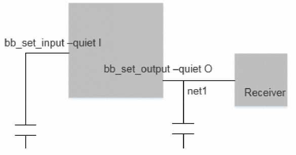
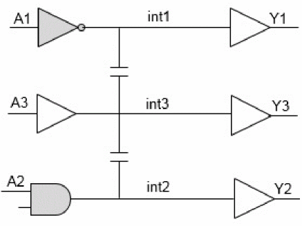
Example of Single UDN Receiver Set Quiet
In the example below, net2 will be analyzed, but does not show up in the glitch report because the receiver is set to quiet.
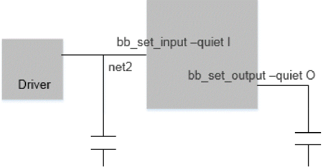
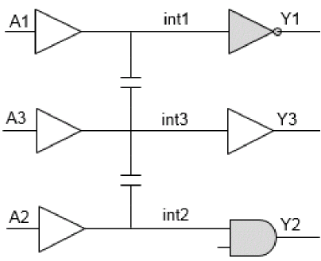
Example of Multi-Driver with UDN Pin Set Quiet
In the following example, int1 and int2 will be analyzed using "Driver" for the driver because the UDN driver pin is set to quiet. The int1 and int2 are valid attackers because "Driver" is a valid driving cell.
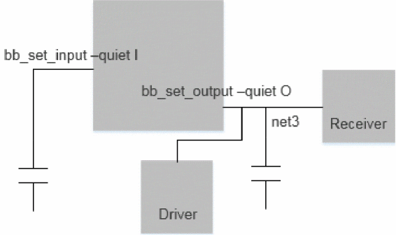
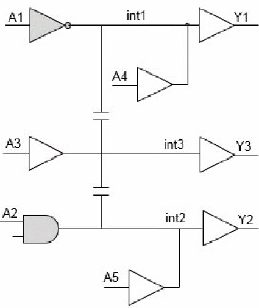
Example of Multi-Receiver with UDN Pin Set Quiet
In the example below, int1 and int2 will be analyzed and show up in the glitch report with "Receiver" as the receiving cell; the UDN will not show up in the glitch report. The "Receiver" is the receiving cell with ROP.
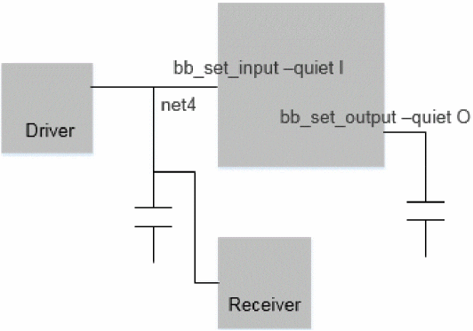
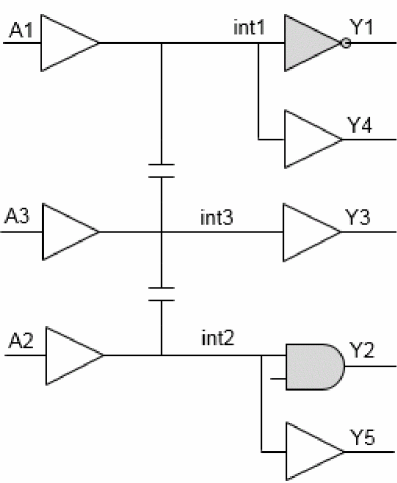
Additional Information
- Slew Propagation
- Constructs in Arc Current Models
- Characterizing Different Cell Types
- Multi-Voltage Characterization
- Generating an ECSM-Noise Liberty Library
- Guidelines for Characterizing Large Cells
Slew Propagation
Slew propagation requires the following steps:
- Characterization: The signal integrity analyzer characterizes the cell for each input by using a set of slews. This essentially creates a characterization table of data corresponding to each input.
- Analysis: During analysis, the signal integrity analyzer searches the appropriate slew at the driving CCC input from the characterization table. This involves searching through all the possible inputs of the cell for a propagated slew of the appropriate type, and interpolating or extrapolating the data.
Characterization
The signal integrity analyzer feeds in five slews (rise and fall) at each input and determines the propagated slews at all the activated final stage CCC inputs. In situations when a particular final stage CCC input is also an output of the cell, the signal integrity analyzer performs simulations for five different capacitances as well. Each input (rise or fall) slew generates five different slews corresponding to five different capacitances. For each simple CCC input, there are five rise and five fall slews for a cell input pin.
This data is stored in the cdB noise library using the bb_set_input command.
bb_set_input -vhtolerance 0.40 -vltolerance 0.40 -cap 2.63e-15 \
-slews {5.000000e-11 2.000000e-10 3.000000e-10 4.000000e-10 5.000000e-10 } \
-rise_prop_to {A B} \
-Rise {1.075753e-10 6.988136e-11 1.074155e-10 1.094738e-10 1.074488e-10
-9.152446e-11 -5.473432e-11 -9.191305e-11 -9.811064e-11 -8.939084e-11 } \
-fall_prop_to {B} \
-Fall {-9.153837e-11 -9.373123e-11 -9.117065e-11 -9.196571e-11 -9.134613e-11} {I1}Analysis
During analysis, the signal integrity analyzer picks up the driving CCC input net and the type of slew required (FastRise, FastFall, SlowRise, SlowFall). Then for this net and required slew type, the signal integrity analyzer tries to get all the propagated slew data from the inputs. If there is a requirement for a fast fall slew at the net, the signal integrity analyzer finds the fast input slews at all the inputs. For each of these slews, the signal integrity analyzer tries to find the fall slews at the net using the characterization table. The signal integrity analyzer then uses the minimum values. Slews of any type can be found using the characterization data.
Constructs in Arc Current Models
Defines a VIVO template. You must specify this once, but can reuse it multiple times in a cell.
Can be used as an index template. Using this template is not a requirement, but using it could save space.
In addition to these constructs, the following set of bb_set_arc statements have been added:
bb_set_arc [-from
arc_input
] [-to
arc_output
] [-dir {in | out | inout}]
[-type {inv | n-inv}] [-stimuli { {net0 | 1} ...}] [-gndcap
value
]
[-millercap
value
] [-current
table
]|
Specifies the type as inverting or non-inverting. |
|
The following example shows what the arc current model information looks like in a cdB noise library file:
bb_index_vector -val {0.000000 0.366667 0.733333 1.100000 1.466667 1.833333 \
2.200000 2.566667 2.933333 3.300000 } VI_INDEX0
bb_vivo_template -inVdd -3.3 -outVdd 3.3 -vi VI_INDEX0 -vo VI_INDEX0 \
-current { 0.0001756 0.0001703 0.000165 ...} inv_VIVO0
bb_set_arc -arctype min_rise -from in -to out -dir in -type inv \
-loadcap { 1.6718e-15 } -millercap { 3.11962e-16 } -stimuli { in 1 } inv_VIVO0
Characterizing Different Cell Types
The following sections provide information on how to characterize different types of cells:
- Tiehi and Tielo Cells
- RAM Cells
- User-Defined Noise Models
- Filler/Antenna/Decoupling Cells
- Sequential and Combinational Cells
- Level-Shifter Cells
Tiehi and Tielo Cells
While characterizing tiehi and tielo cells, ensure the following:
Use the default value for port pull-up and pull-down resistance by setting the port_vdd_r and port_gnd_r variables to 1, respectively.
Specify the tiehi and tielo cells using the -cell_list option of the generate_cell_lib command.
The following example shows how to characterize tiehi and tielo cells:
message_handler -set_msg_level DEFAULT
set_parm port_vdd_r 1
set_parm port_gnd_r 1
set_supply -vdd 1.0 -gnd 0.0
read_dotlib sample.lib
generate_cell_lib -cell_list { TIEHI TIELO } \
-vdd { VDD } -gnd { VSS VSS1 } \
-file_list { net.SPICE.TT } \
-file sample.cdB \
-text RAM Cells
The cdB generated by make_cdB contains a cell-level and a transistor-level view. The transistor-level view is necessary to propagate the noise through the cdB's and apply propagation based noise filtering. In case of large cells, such as RAM (memory) cells, the transistor-level view contains only the peripheral transistors connected to the pots of the cell. This allows the signal integrity analyzer to propagate noise one level into the cell.
make_cdB and using the generated cdB for signal integrity analysis, might result in high runtime. If the memory block has less than 100K transistors, make_cdB can characterize it in the normal way. However, when the macro size increases, it might be necessary to remove the core of the macro or memory block. This is because make_cdB flattens the block before it performs calibration. The flattening process can consume a lot of memory, often more than what is available, resulting in an early termination of calibration.To characterize RAM cells, identify the core of the memory and remove the core bits. A typical RAM cell contains six transistors for a bit. The following is an example of a typical RAM cell:
.SUBCKT CELL WL BL BLB VDD VSS
XI TT BB VDD INV LN=0.10 WN=0.20 LP=0.15 WP=0.15
MN2 BL WL TT VSS NM L=0.15 W=0.15
MN1 BLB WL BB VSS NM L=0.15 W=0.15
X2 BB TT VDD INV LN=0.10 WN=0.20 LP=0.15 WP=0.15
.ENDS
To remove the core bits, you can delete all the lines between .SUBCKT and .ENDS. Alternatively, you can create an empty .SUBCKT for the cell and store it in a separate file, which will be called before the main SPICE file to replace the RAM cell in the netlist. The following is an example of an empty SUBCKT for this cell:
*title line
.SUBCKT CELL WL BL BLB VDD VSS
.ENDS
When this SUBCKT is properly loaded, all the bit cells are empty. The remaining control logic is characterized by make_cdb for use in the signal integrity analysis. The make_cdb characterization runtime can be minimized by removing as much of the core of the memory as is possible. All that needs to remain is at least two series cells from the boundary pins of the memory block for proper characterization by make_cdb. Assuming that you have created an empty SUBCKT and stored it in a file called dummy_bit_cell.spi, the tcl file for make_cdb will look as follows:
set_parm port_vdd_r 1
set_parm port_gnd_r 1
set_supply -vdd 1.08 -gnd 0.0
#Use the read_dotlib command to extract pin directions from the typical.lib file.
read_dotlib typical.lib
# Characterize only the necessary cells (top level cell) by
# listing the cells in -cell_list option.
# Avoid using the -all option. Only characterize the needed ones.
# List all of the vdds and gnds.
# Load the dummy_bit_cell.spi first using the -bit_cell_list option.
generate_cell_lib \
-vdd {VDD} \
-gnd {VSS} \
-cell_list ram512_4r4s4 \
-bit_cell_list { dummy_bit_cell.spi main.spi } \
-file ram512_4r4s4.cdB make_cdb will load the dummy bit cell first, and then it will encounter another subckt by the same name. A warning will be issued that the first definition loaded will be used and the second one will be ignored. This is acceptable, and is the expected behavior.User-Defined Noise Models
If you have an analog block that has one or more analog pins, make_cdb can characterize a user-defined noise model (UDN) for the analog block. This UDN will contain only the cell-level view and there will be no transistor-level view. This cell-level view contains pin capacitance, calibrated input noise threshold, and Vds-Ids curves representing the nonlinear output drive strength. Use the generate_cell_lib command with the -udn_list option to specify a list of cells in the cell library that should only have UDNs. In the following example, the my_analog_cell UDN is specified with the -udn_list option:
set_parm port_vdd_r 1
set_parm port_gnd_r 1
set_supply -vdd 1.08 -gnd 0.0
#Use the read_dotlib command to extract pin directions from the typical.lib file.
read_dotlib typical.lib
#Characterize only the necessary cells (top level cell) by listing the cells
#in udn_list option.
#All cells in the UDN list must not be included in any other list such as -cell_list.
#Avoid using the -all option, only characterize the needed ones.
#List all of the vdds and gnds.
#Load the dummy subckts first using the -file_list option.
generate_cell_lib \
-vdd {VDD} \
-gnd {VSS} \
-udn_list { my_analog_cell }\
-file_list { main.spi } \
-file analog_SS_1.08V_125C.cdB
Filler/Antenna/Decoupling Cells
A filler cell is a cell for which the only thing characterized by make_cdb is pin capacitance. Filler cells are also called antenna or decoupling cells. No noise reporting is done for a filler cell. Input pins will have just the capacitance and a very high input noise tolerance. The high input noise tolerance will prevent any failures from being reported for the input pins of this cell. These cells do not have active output drivers and often do not have synthesis library definitions. Declare the port direction on the ports of these cells using the set_port command when no synthesis library definition is available. The following example illustrates characterization for the ANTENNA filler cell using the -filler_list option:
set_parm port_vdd_r 1
set_parm port_gnd_r 1
set_port -dir in ANTENNA I
set_supply -vdd 1.2 -gnd 0.0
read_dotlib Antenna.lib
generate_cell_lib \
-vdd {VDD} \
-gnd {VSS GND 0 } \
-filler_list { ANTENNA } \
-file_list { main.spi } \
-file ANTENNA_TT_1.2V_25C.cdB
Sequential and Combinational Cells
The procedure for characterizing sequential and combinational cells is the same as characterizing any other standard cell. The following example illustrates how to characterize sequential and combinational cells by specifying the DFF1CK_G34 sequential cell and the XORF201_G18 combinational cell with the -cell_list option:
set_parm port_vdd_r 1
set_parm port_gnd_r 1
set_supply -vdd 1.08 -gnd 0.0
read_dotlib typical.lib
generate_cell_lib \
-vdd {VDD} \
-gnd {VSS} \
-cell_list { DFF1CK_G34 XORF201_G18 } \
-file_list { main.spi } \
-file out.cdB
Level-Shifter Cells
To characterize a level-shifter cell, use the set_supply command to specify the nominal voltage and the set_net command to specify the other voltage values.
The following example shows how to characterize a level-shifter cell:
# Specify the voltages that will be used to characterize each cell.
set_supply -vdd 1.08 -gnd 0
# Specify the voltages for all non-nominal supplies.
set_net -vdd 2.0 vdd2v
set_net -vdd 3.0 vdd3v
# Load the timing library.
read_dotlib level_shifter.lib
# Generate the noise library for all the cells.
generate_cell_lib \
-cell_list {low2high high2low} \
-file_list {main.sp} \
-vdd {vdd2v vdd3v vdd} \
-gnd {vss} \
-file level_shifter.cdB \
-text The nominal voltage is 1.08V (for vdd).
There is a 2V supply (vdd2v) and a 3V supply (vdd3v) for the level-shifter as well.
* top line is always a comment line
.inc models.sp
.inc level_shifter.sp
.temp 125Multi-Voltage Characterization
To create a cdB file with cells characterized for multiple voltages, use the set_supply command to specify each voltage. The following example will characterize each cell with VDD listed at 1.08V, 2.0V, and 3.0V and each cell with VDD25 at 1.5V, 2.5V, and 3.5V.
# Specify the supply values for characterization
set_supply -vdd 1.08 -gnd 0
set_supply -vdd 2.0 -gnd 0
set_supply -vdd 3.0 -gnd 0
set_net -nomvdd 2.5 VDD25
set_net -nomvdd 3.5 VDD25
set_net -nomvdd 1.5 VDD25
# Generate the noise library for each cell.
# Each cell will be characterized at the above voltages.
generate_cell_lib \
-cell_list {
BUF
DFF
NV
CLKBUF
LVLSHFT
} \
-vdd { VDD VDD25 } \
-gnd { VSS } \
-file_list {
main.spi
subckts
}\
-synlib cell_w.lib \
-file sample.cdB \
-textGenerating an ECSM-Noise Liberty Library
To generate a Liberty (.lib) library that contains effective current source model (ECSM)-based noise data, use the -ecsm_si option of the generate_cell_lib command.
The following example shows how to generate a Liberty file with ECSM-noise extensions:
read_dotlib test.lib
generate_cell_lib \
-vdd {vdd vcc} \
-gnd {gnd vss} \
-cell_list { \
inv buf \
} \
-file_list { \
main.sp \
inv_chain.sp \
} \
-file lab1.sp \
-ecsm_siThe above script generates the following files:
-
make_cdbtest.lib: Contains the ECSM-noise data. -
lab1.sp: Contains the SPICE model and subckt information in encrypted format.
read_lib make_cdbtest.lib
read_lib -cdb lab1.spGuidelines for Characterizing Large Cells
-
Avoid memory and performance-related issues.
Try characterizing subsets of cells at a time. If all the cdB noise libraries need to be in one file, use themerge_cdbcommand after you have generated the cdB noise libraries for these subsets. -
Avoid putting too much information into the cdB noise library.
For noise analysis, the peripheral transistors of the cell are of primary importance. You can set the-maxsizeoption to a low value and forcemake_cdBto strip off the non-critical transistors of the cell, and keep only the peripheral ones. -
Avoid using UDNs in the signal integrity analyzer whenever possible.
For large cells, such as memories, it is recommended that you black-box the bit cell for cdB characterization inmake_cdBand then use the resulting cdB for signal integrity analysis. However, for a purely analog block, it is recommended that you use UDNs. For detailed explanation on how to characterize large macros, such as memories, see RAM Cells. - Avoid processing large channel-connected regions of transistors by setting the following global variables to small values:
Return to top